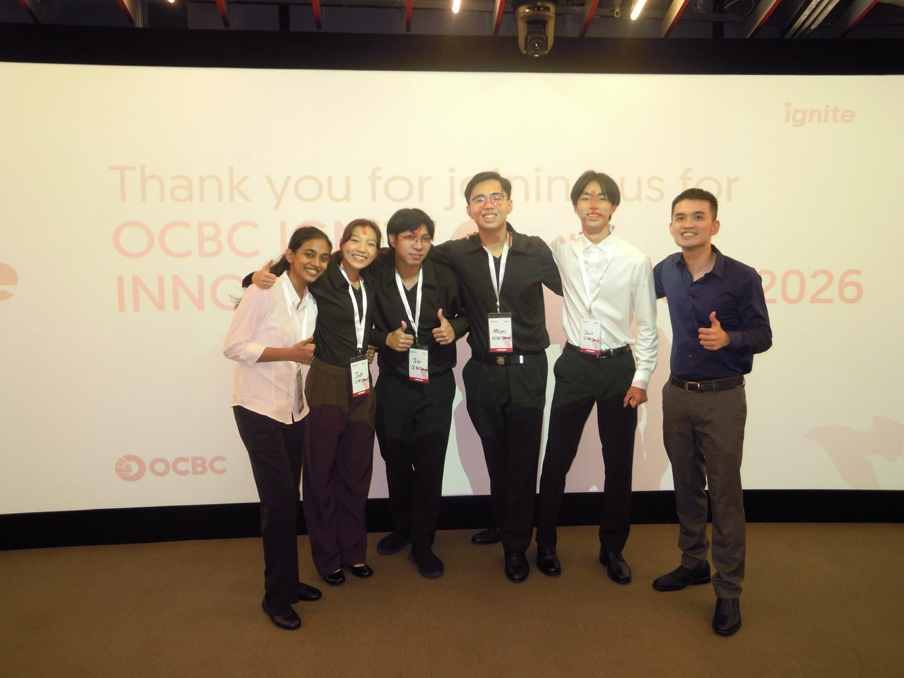

Our team at the OCBC Ignite Innovation Challenge 2026
2026
OCBC Sense
OCBC Ignite Innovation Challenge · Adaptive Banking
- A digital banking assistant that notices when an applicant is struggling and offers help from an AI assistant or a real staff member
- Our survey of 71 people found 90% had experienced difficulties with digital banking
- My part: built the backend, ran the whole system in Docker with one command, and connected the AI service and staff dashboard
"The AI can fail; the journey can't." If the AI is slow or down, customers can still finish and reach a person.